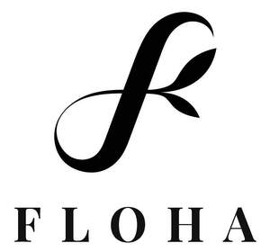

Trade Mark Journal No.2026/008 20 February 2026
UK00004331132 28 January 2026 (3,41,44)

- Class 3
- Cosmetics; cosmetic preparations for skin care; skin care (cosmetic preparations for -); skin care preparations; skin care cosmetics; non-medicated skin care preparations; non-medicated skincare preparations; cosmetics for use on the skin; cosmetics and cosmetic preparations; non-medicated cosmetics; wax (depilatory -); depilatory wax; depilatory waxes; hair wax; depilatory lotions; epilating waxes; depilatory creams; moustache wax; wax (moustache -); mustache wax; wax treatments for the hair; depilatories; scented wax melts; depilatory sugar paste; eyebrow styling wax; depilatory preparations; wax melts [fragrancing preparations]; wax strips for removing body hair; massage waxes; shaving lotions; shaving lotion; hair styling waxes; shaving cream; shaving gel; foam for use in shaving; shaving foam; shaving balm; shaving oils; shaving balms; shaving sprays; foams for use in shaving; shaving foams; shaving soap; shaving mousse; shave gel; skin creams; creams for the skin; skin creams [cosmetic]; skin creams [for cosmetic use]; cosmetic creams for the skin; moisturising skin creams [cosmetic]; non-medicated skin creams; skin creams [non-medicated]; skin lotions; lotions for the skin; skin cream; cosmetic creams for dry skin; skin moisturizers; skin moisturisers; skin moisturizers used as cosmetics; moisturising skin lotions [cosmetic]; skin moisturizer; skin moisturiser; massage gels, other than for medical purposes; massage gels other than for medical purposes; balms other than for medical purposes; balms, other than for medical purposes; body scrubs; exfoliating scrubs for the body; exfoliating scrubs for the face; cosmetic body scrubs; body scrubs [cosmetic]; body scrub; face scrub; exfoliating body scrub; oils for perfumes and scents; essential oils; essential oils for fragrancing; essential oils for cosmetic purposes; essential oils as perfume for laundry purposes; natural oils for perfumes; scented oils; ethereal essences and oils; massage oils; ethereal oils for fragrancing; cleaning preparations; cleaning and fragrancing preparations; cleaning pads impregnated with cosmetics; impregnated cleaning pads impregnated with cosmetics; cleaning preparations impregnated into pads; non-medicated toiletries; toiletry preparations; non-medicated toiletry preparations; non-medicated cosmetics and toiletry preparations.
- Class 41
- Educational services in the nature of beauty schools; educational services in the nature of skin care schools; educational services in the nature of nail art schools; beauty school services; beauty arts instruction; educational services relating to beauty therapy; teaching of beauty skills; teaching of beauty skills, namely nail art; teaching of cosmetic beauty skills; educational seminars relating to beauty therapy; instruction in cosmetic beauty; educational services provided by beauty schools; dissemination of educational material; conducting of educational events; arranging and conducting of educational events; arranging and conducting of educational events relating to hairdressing; arranging and conducting of educational events relating to beauty.
- Class 44
- Salons (beauty -); beauty salons; beauty salon services; salon services (beauty -); services of a hair and beauty salon; beauty spa services; beauty treatment; beauty care; beauty consultation; beauty consultancy; facial beauty treatment services; beauty counselling; beauty therapy services; skin care salon services; beauty treatment services; beauty therapy treatments; beauty care services; skin care salons; hygienic and beauty care; beauty consultation services; hygienic and beauty care services; beauty care services provided by a health spa; beauty consultancy services; human hygiene and beauty care; beautician services; beauty information services; cosmetic body care services; cosmetic body care services provided by health spas; cosmetic facial and body treatment services; services for the care of the skin; cosmetic treatment services for the body, face and hair; laser hair removal services; cosmetic electrolysis for the removal of hair; cosmetic laser treatment of unwanted hair; cosmetic laser treatment for hair growth; permanent hair removal and reduction services; body waxing services for hair removal in humans; cosmetic laser treatment of skin; hair treatment; personal hair removal services; cosmetic treatment for the hair; depilatory waxing; depilatory treatment; massage and therapeutic shiatsu massage; massage; acupressure therapy; hot stone massage therapy services; hot stone massage; bodywork therapy; cupping therapy; physiotherapy [physical therapy]; massage services; massages; sports massage; foot massage services; thai massage; health care relating to therapeutic massage; deep tissue massage.
SOOHEE KIM
Representative: Swindell & Pearson Limited